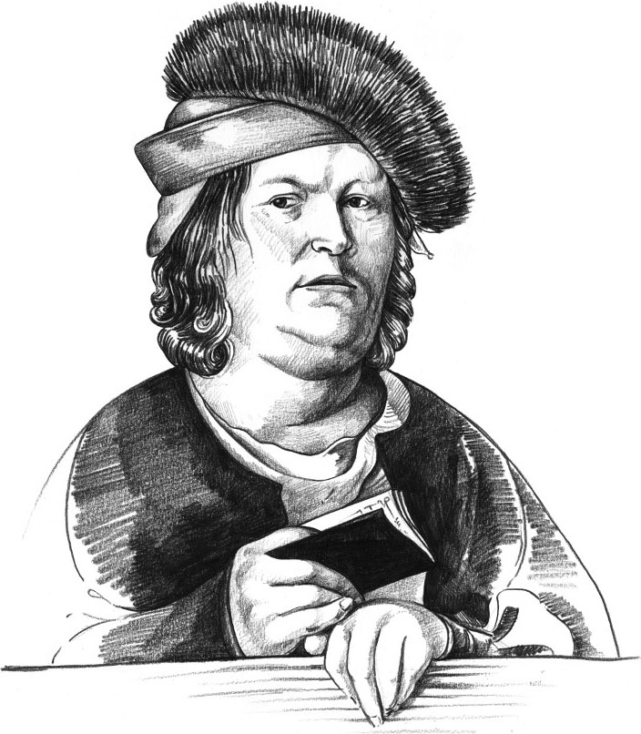
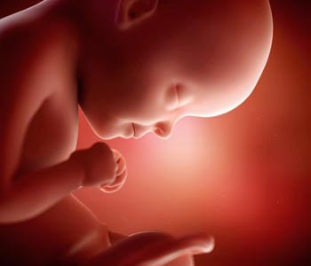

ООО "Альтернатива" - технический организатор медицинских онлайн-конференций в Нижнем Новгороде
...болезнь не может приспосабливаться к знаниям и опыту врача,
Парацельс, XV век
напротив,
это врач должен постоянно учиться и совершенствоваться.
Высокотехнологичная медицинская помощь опирается не только на современное оборудование и технологии, но и на высокую квалификацию специалистов, которая невозможна без постоянного обучения и обмена опытом.
В условиях пандемии единственная возможность безопасно поделиться мнением и донести до заинтересованной аудитории специалистов новые методы лечения это ‒ интернет-площадка.
Уровень развития компьютерных технологий позволяет практически неограниченно расширить круг спикеров и дистанционно прослушать лекции ведущих ученых и практиков по заявленной теме в режиме реального времени.
Присоединяйтесь!
Приглашаем принять участие в работе научно-практических конференций в онлайн-формате:
-

Цикл образовательных мероприятий под общим названием:
Подробнее о конференции Сложное целое мать и дитя
«Сложное целое: мать и дитя»
Тема: «Врожденные пороки сердца (ВПС)» -

«Остеопороз на клинических примерах»
Подробнее о конференции Остеопороз на клинических примерах -
«Формула активного долголетия»
Подробнее о конференции Формула активного долголетия